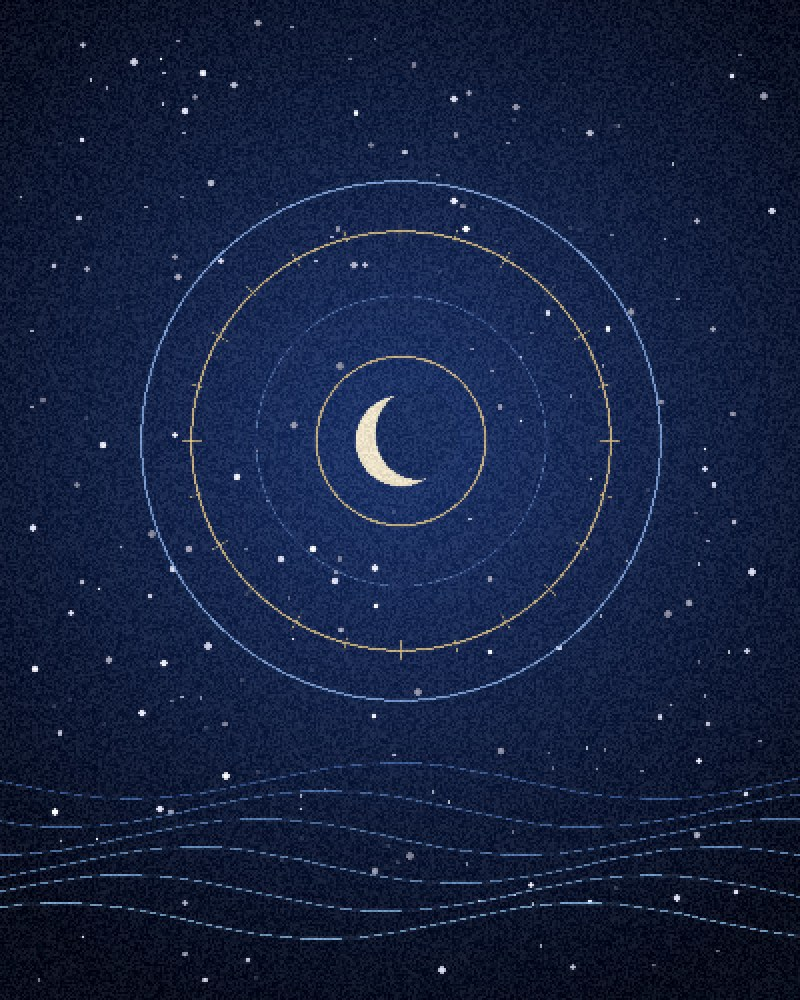
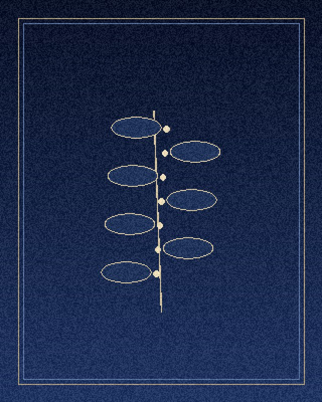
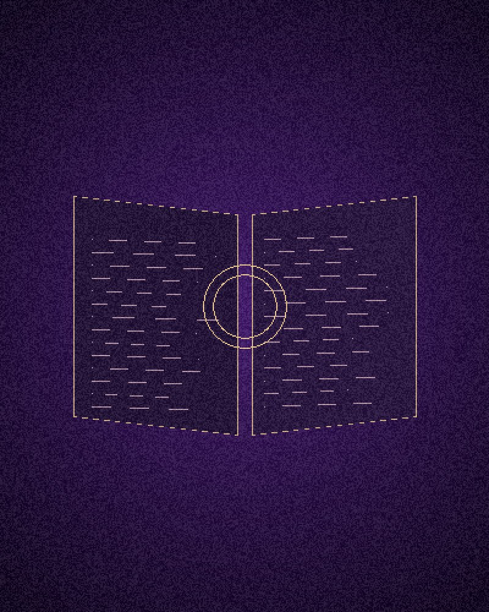
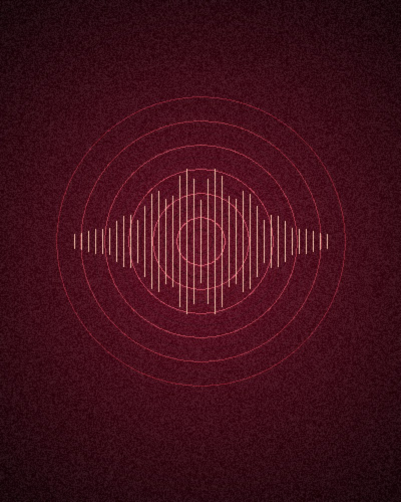

UM UNIVERSO CONSTRUÍDO EM TRÊSATOS
PROJETO
Margot
Entre constelações que guardam segredos, páginas sublinhadas à meia-noite e acordes que ainda aguardam o silêncio certo.
PRÓLOGO // O COMEÇO DO MAPA
Nem toda história começa na primeira página.
Algumas começam como uma pequena órbita — um detalhe notado de longe, um riso que muda a gravidade da sala, uma curiosidade que pede para ser decifrada com calma.

Registro estelar: coordenadas de algo raro em movimento.
“Para descobrir o que há no centro, atravesse as três atmosferas.”
COLEÇÃO DE FRAGMENTOS — TOQUE PARA REVELAR
01
O CÉU NÃO É SILENCIOSO
No primeiro ato, o espaço não é vazio: está repleto de mensageiros teimosos, flechas fora de rota e estrelas que exigem precisão.
ARRASTE NA TELA OU USE OS CONTROLES

ARQUIVO II • TINTA VIOLETA
INTERLÚDIO I // PAUSA ENTRE AS ESTRELAS
Quando o ruído do espaço cessa, sobra a voz escrita.
“Tudo o que não invento é falso.” — Manoel de Barros
Deixamos para trás os reflexos rápidos da órbita para entrar em um território mais silencioso e denso. Aqui, cada frase funciona como uma chave, e cada metáfora guarda uma intenção oculta.
No próximo desafio, observe além da superfície das palavras: leia o subtexto, reconheça quem as escreveu e decifre o que elas realmente querem dizer.
MANUSCRITO I DE 3
ACERTOS: 0/3
LEITURA CONCLUÍDA
As páginas revelaram seu sentido.
✦ ❧ ✦

INTERLÚDIO II // O ÚLTIMO LIMIAR
Depois da órbita e da palavra, resta aquilo que se ouve de olhos fechados.
A luz se aprofunda em carmim. Tudo o que foi reunido até aqui — a precisão do primeiro gesto e a atenção às entrelinhas — prepara o terreno para o capítulo final.
O último ato pertence à música: ao ritmo que não precisa de tradução e às notas que encerram a travessia.
NÍVEL III — CAPÍTULO MUSICAL
Estrutura reservada para o ato final. Em breve, este espaço ganhará som, compasso e desfecho.